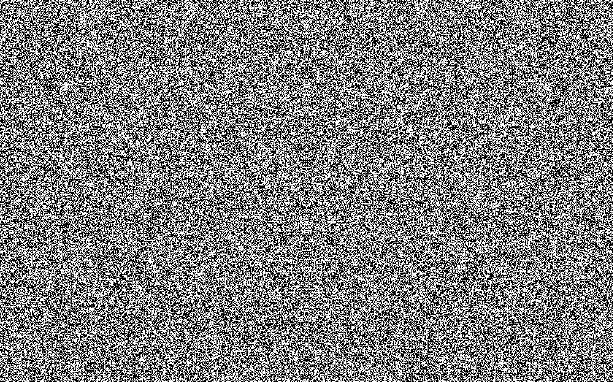

Magic in the Machine
This project investigates the intersection of:
- • machine / magic
- • technology / divination
- • rational / irrational
- • data / intuition
<Why>
Human society has always had practices to place our faith in non-human powers, whether its the stars, a god, or simply leaving decisions to chance. Sometimes, it’s flipping a coin, or opening an astrology app to find out what our next steps should be. Now, it’s as simple as asking ChatGPT a question.
In a world of black box algorithms, the operations that predict outcomes are no more than divine oracles subject to biases, misinformation or malicious outcomes disguised as objective truth. Regardless, its increasing prevalence and progress point towards a future where AI models are believed to be a primary source for meaning-making and decision-making.
<How>
This project thus positions divinatory practices as a source of knowledge for understanding our relationship with existing and future AI technologies. By digging deeper into prior systems of beliefs, we might then be able to find an alternative perspective for discussing and mitigating the inevitable implications of AI technologies.
